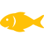

Our project
Our project

 |
Mexico - Gulf of California |
 |
115.064/200.000 |
|  |
Vaquita |
Vaquita, the world's most rare marine mammal, is on the edge of extinction.
This little porpoise wasn't discovered until 1958 and a little over half a century later,
we are on the brink of losing them forever. Vaquita are often caught and drowned in gillnets used by illegal fishing operations
in marine protected areas within Mexico's Gulf of California. More than half of the population has been lost in the last three years.
The vaquita has a large dark ring around its eyes and dark patches on its lips that form a thin line from the mouth to the pectoral fins.
Its dorsal surface is dark gray, sides pale gray and ventral surface white with long, light gray markings.
Newborn vaquita have darker coloration and a wide gray fringe of color that runs from the head to the dorsal flukes,
passing through the dorsal and pectoral fins. They are most often found close to shore in the Gulf's shallow waters,
although they quickly swim away if a boat approaches.
Status |
Critically Endangered |
|
|
Population |
Fewer than 100 individuals |
|
|
Scientific Name |
Phocoena sinus |
|
|
Habitat |
Marine (only in the northern Gulf of California) |
|
|